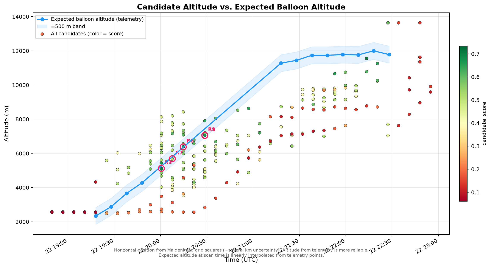
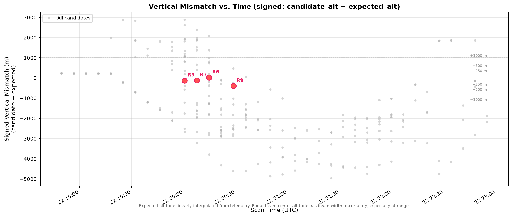
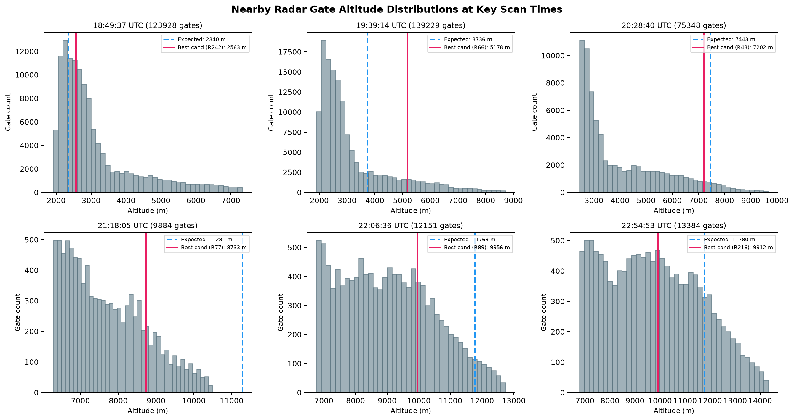
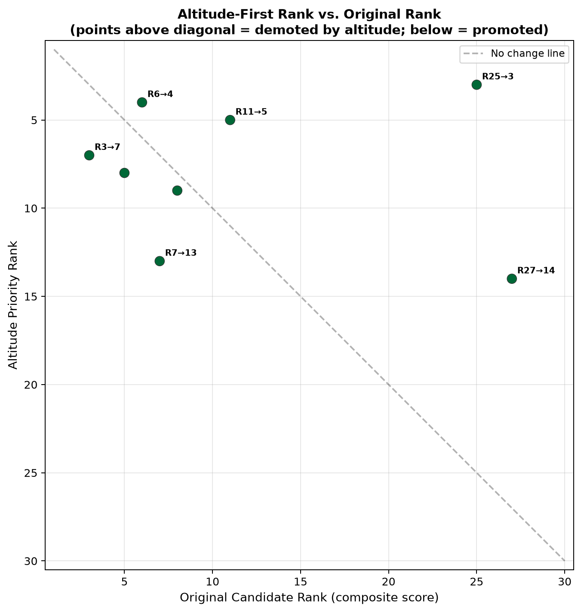

About PicoCAST
PicoCAST is an experimental research pipeline designed to detect and track weak, non-stationary targets (like amateur high-altitude pico-balloons) within archived NOAA NEXRAD Level II weather radar data.
Detecting objects with a radar cross-section of mere centimeters at ranges up to 200 km is a classic "needle in a haystack" problem. Traditional weather algorithms filter these out as noise or biological clutter. PicoCAST takes a different approach:
- Interpretability First: We use explicit, tunable heuristics rather than opaque machine learning models to extract point-target features (reflectivity, velocity, dual-pol texture).
- Telemetry-Guided Validation: We use known pico-balloon flight telemetry (horizontal Maidenhead grid squares + highly accurate GPS altitude) to validate our detections against ground truth.
- Altitude-Constrained Tracking: Because horizontal grid squares are large (~5km wide), we heavily weight the vertical correlation between the radar beam's gate altitude and the balloon's reported altitude.
The validation case presented below focuses on the K7UAZ balloon launch on March 22, 2026, tracked by the KEMX radar station in Tucson, Arizona.
Balloon horizontal position is estimated from 6-character Maidenhead grid squares
(~4.6 × 7.1 km at this latitude). Altitude from telemetry is much more reliable.
Candidate offsets are relative to the grid-center estimate, not exact GPS.
Interactive Maps
🗺️ Interactive Candidate Map
Full overview with all 10 top candidates, expected balloon track,
Maidenhead grid squares, KEMX radar site, range rings, and optional
gate-level data. Switch between OpenStreetMap, topo, and satellite basemaps.
Primary Map
🎯 Rank #1 Validation Map
Focused view on the best candidate. Shows the matching grid square,
distance line from grid center to candidate, nearby radar gates
colored by reflectivity, and altitude consistency details.
Candidate Detail
📈 Temporal Sequence Map
Candidates ranked 1, 3, 6, 7, 9 shown in time order from 20:00–20:28 UTC.
Connecting lines trace the temporal progression with grid-square boxes
for each candidate's scan time.
Time Series
🚀 Candidate Trajectory Dashboard
Interactive dashboard mapping the altitude-constrained radar candidate trajectory from 20:00–20:30 UTC. Features a dual-panel view with a GIS map on top and a dynamic altitude vs. time chart below.
New Analysis
Altitude-First Validation
The balloon's horizontal position comes from Maidenhead grid squares — each square is several km across.
But the altitude from telemetry is much more precise.
This section asks: do the candidate radar returns follow the balloon altitude-time profile?
We use the term "altitude-consistent near-track candidate"
— not "detection." Altitude consistency is necessary but not sufficient evidence.
📊 Plot 1 — Candidate Altitude vs. Expected Balloon Altitude

What this shows: The blue line is the expected balloon altitude from telemetry
(linearly interpolated between reporting points). The shaded band is ±500 m. Each dot is a radar
candidate cluster, colored by its composite candidate score (green = high, red = low).
Pink-circled dots are the focus candidates (ranks 1, 3, 6, 7, 9).
What to look for: Candidates that fall on or near the blue altitude curve —
especially within the ±500 m band — are altitude-consistent. Candidates far above or below
the curve are likely weather clutter, terrain, or other non-balloon targets.
Key finding: Several candidates closely track the ascending balloon altitude,
particularly R3 (−133 m), R6 (+25 m), and R7 (−118 m) during the 20:00–20:14 UTC period.
These are classified as "excellent altitude match."
📊 Plot 2 — Signed Vertical Mismatch vs. Time

What this shows: For each candidate, the signed vertical mismatch
(candidate altitude − expected balloon altitude) is plotted against scan time.
The black line is 0 m (perfect altitude match). Dashed guide lines are drawn at
±250 m, ±500 m, and ±1,000 m.
What to look for: Good candidates cluster near 0.
A negative value means the candidate is below the expected altitude;
positive means above. Focus candidates (pink dots) are labeled by rank.
Key finding: R6 has only +25 m mismatch. R3 and R7 are within ±150 m.
R1 and R9 (both at 20:28 UTC) have −389 m mismatch — still within the "strong" band
but not excellent.
Caveat: Radar gate altitude is the beam-center altitude. The physical beam
has width that increases with range from KEMX. At ~100 km range, the beam may span several
hundred meters vertically, so a mismatch of a few hundred meters doesn't necessarily
mean the balloon was outside the beam.
📊 Plot 3 — Nearby Gate Altitude Distributions

What this shows: For 6 key scan times spread across the flight, the histogram
shows the altitude distribution of all nearby radar gates (from the 2.18M-row
near_track_gates.csv). The blue dashed line is the expected balloon altitude.
The pink line is the best candidate's altitude at that scan time.
What to look for: If the candidate altitude is at a "special" position in
the distribution — away from the bulk of the gates — that supports it being a distinct target
(like a balloon) rather than part of a large weather feature. If the candidate altitude falls
in the middle of a dense cluster of gates at similar altitude, it could be weather.
📊 Plot 4 — Altitude-First Rank vs. Original Rank

What this shows: Each dot is one of the top 30 candidates. The X-axis is the
original composite rank (which weighted horizontal distance, reflectivity, compactness, etc.).
The Y-axis is the new altitude-priority rank (which puts altitude consistency first).
How to read it:
Points below the diagonal were promoted by altitude-first scoring
(altitude match is better than the original score suggested).
Points above the diagonal were demoted
(original score was high but altitude match is poor).
Points near the diagonal didn't change much.
Key finding: Original Rank 6 moves to altitude-priority Rank 4 (+25 m mismatch).
Original Rank 3 moves to altitude-priority Rank 7 (−133 m).
Original Rank 1 drops to altitude-priority Rank 38 (−389 m mismatch, demoted by the altitude-first method).
📋 Focus Candidates: Original Rank vs. Altitude Rank
| Orig Rank |
Alt Rank |
Scan Time |
Signed Mismatch |
Altitude Label |
Composite Score |
| R1 |
→ 38 |
20:28:40 |
−389 m |
strong altitude match |
0.734 |
| R3 |
→ 7 |
20:00:31 |
−133 m |
excellent altitude match |
0.715 |
| R6 |
→ 4 |
20:14:42 |
+25 m |
excellent altitude match ✨ |
0.674 |
| R7 |
→ 13 |
20:07:36 |
−118 m |
excellent altitude match |
0.674 |
| R9 |
→ 39 |
20:28:40 |
−389 m |
strong altitude match |
0.666 |
Reading the table: "Orig Rank" is the original composite score ranking.
"Alt Rank" is the new altitude-priority ranking. R6 stands out with only +25 m altitude
mismatch at 20:14 UTC — the closest match in the entire dataset.
R3 and R7 are also excellent.
R1 and R9 are demoted because their −389 m mismatch, while still "strong," is not as
compelling as the excellent-match candidates.
This is not a detection claim. These candidates are
"altitude-consistent near-track candidates." Many factors — weather, ground clutter,
biological targets — can produce radar returns at similar altitudes. Altitude consistency
raises the prior probability but is not proof.
🔗 Trajectory Analysis (20:00–20:30 UTC)
This analysis tests whether the top altitude-consistent candidates can be connected into a smooth, physically plausible trajectory. We focus on the period with the strongest altitude matches (20:00–20:30 UTC).
| Metric |
Result |
| Time Window |
20:00:31 → 20:28:40 UTC |
| Path Points |
5 points (from 5 unique scan times) |
| Median Vertical Mismatch |
118 m |
| Max Segment Speed |
73 km/h (physically plausible) |
Key finding: PicoCAST identified an altitude-consistent KEMX candidate sequence that can be connected into a smooth radar-assisted candidate trajectory. The path follows the expected altitude curve and progresses steadily without physically impossible jumps.
Caution: This constitutes a possible balloon-associated sequence. It is not a confirmed detection without independent verification.